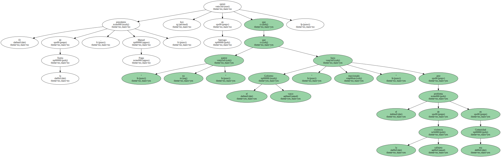
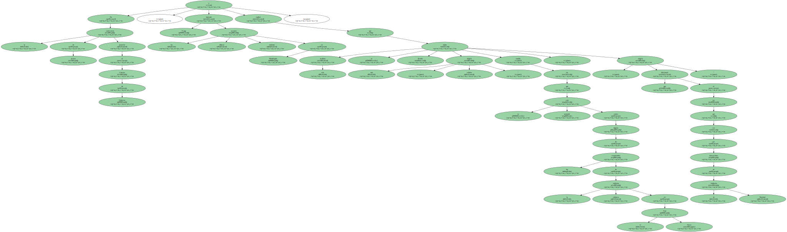
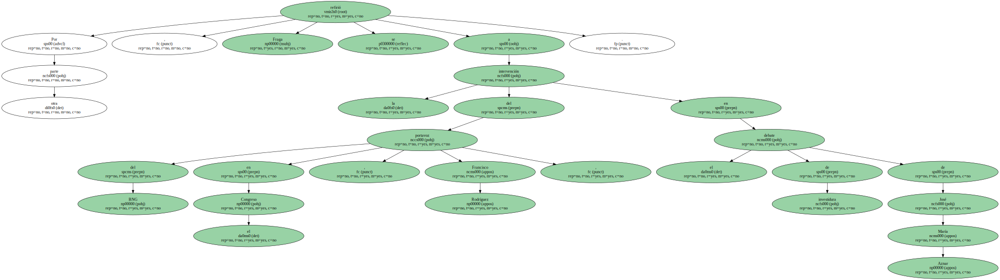
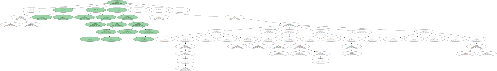
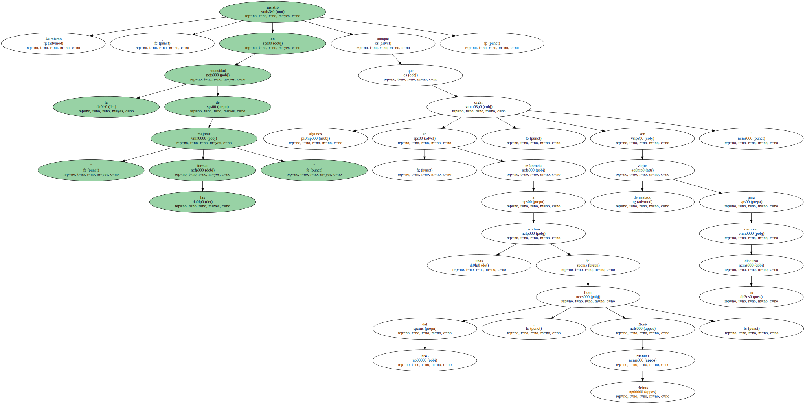
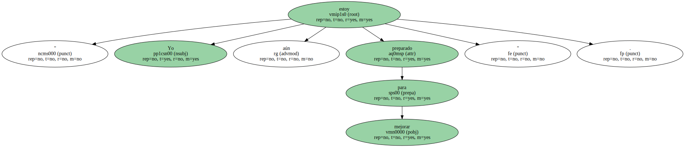

El presidente de la Xunta , Manuel Fraga , opinó hoy en Santiago que " no parece " que el Gobierno vasco " haya reaccionado " ante el problema de la violencia callejera en esa Comunidad.
En la conferencia de prensa posterior al Consejo de Gobierno , Fraga lamentó las últimas acciones violentas en Mondragón y explicó que esta mañana se había llevado una " relativa alegría " cuando vio que se está actuando contra algunos de los responsables de la violencia callejera en el País Vasco , " alegría que disminuyó al ver que era por instrucciones de la Audiencia Nacional ".
En este sentido agregó que " no parece " que el Ejecutivo vasco reaccione y sugirió que al tratarse de un asunto grave " puede llevar incluso a tener que considerar de aplicación disposiciones constitucionales cuando un Gobierno autónomo no cumple con sus obligaciones ".

Por otra parte , Fraga se refirió a la intervención del portavoz del BNG en el Congreso , Francisco Rodríguez , en el debate de investidura de José María Aznar.
Para el presidente gallego fue " brillante " la respuesta de Aznar al definir como " terrorífico " el discurso del Bloque , ya que , agregó en referencia a esta formación , " algunos creyeron que un cierto tipo de tensión les iba a llevar muy lejos y no les llevó a ninguna parte " e incluso " les chocó " en la Cámara baja.
Asimismo , insistió en la necesidad de " mejorar las formas " aunque algunos - en referencia a unas palabras del líder del BNG , Xosé Manuel Beiras , " digan que son demasiado viejos para cambiar su discurso ".
" Yo aún estoy preparado para mejorar ".
